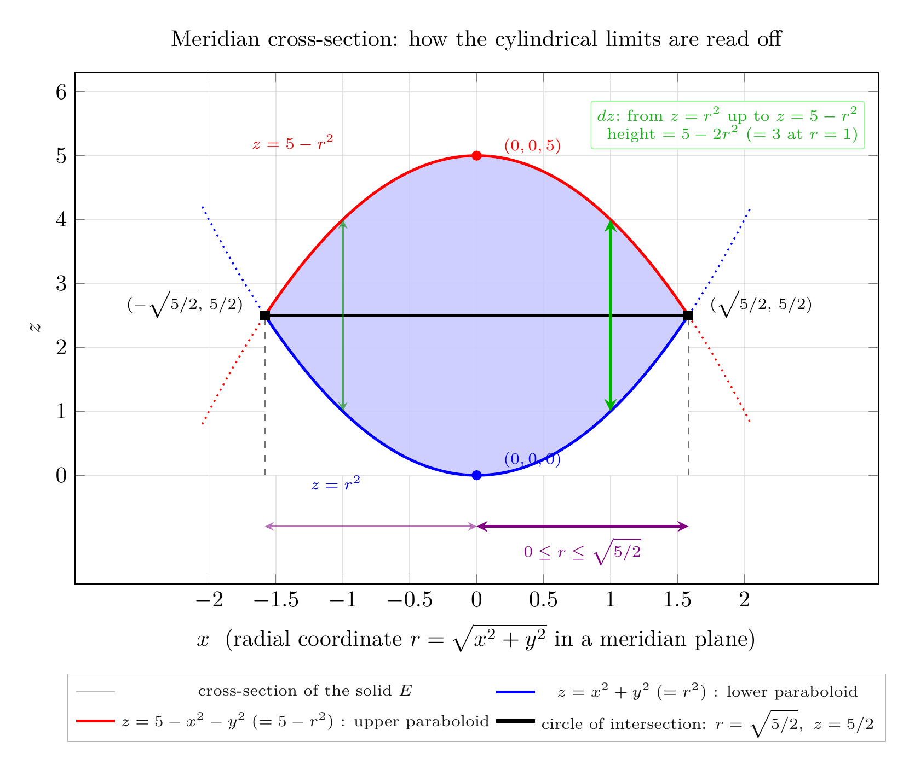
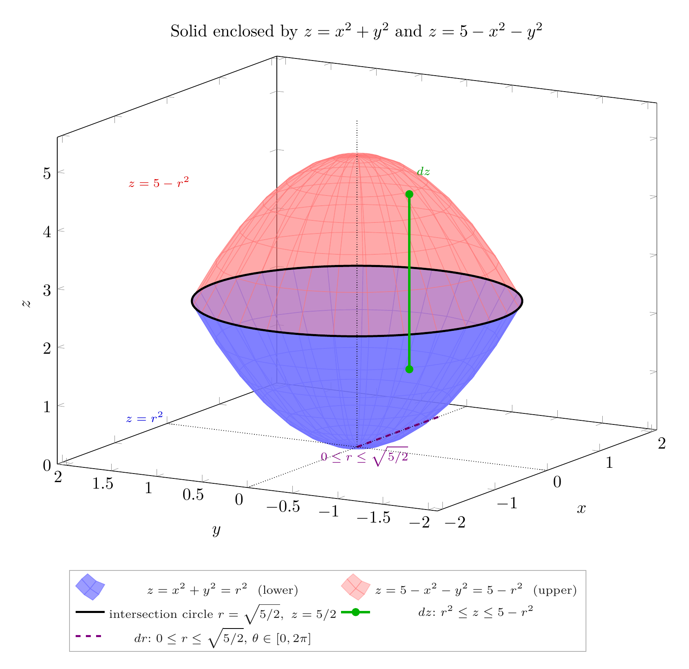

Please solve the problem in the following image.
(Image `20260928_020350_787732_utc_0800_0.png`. Alt text: Image: human_20260928_020350_787732_utc_0800)
20260928_020350_787732_utc_0800_0.png
End of problem
Answer
# Drawing the solid enclosed by two paraboloids
**Problem (§15.8, Ex. 14).** Use a graphing device to draw the solid enclosed by the paraboloids
$$z=x^{2}+y^{2}\qquad\text{and}\qquad z=5-x^{2}-y^{2}.$$
## Step 1 — Recognize the two surfaces
Both equations involve only $x^{2}+y^{2}=r^{2}$, so **both surfaces are rotationally symmetric about the $z$-axis** (that is exactly why cylindrical coordinates are the right tool here):
| surface | cylindrical form | shape |
|---|---|---|
| $z=x^{2}+y^{2}$ | $z=r^{2}$ | circular paraboloid, opens **upward**, vertex at $(0,0,0)$ |
| $z=5-x^{2}-y^{2}$ | $z=5-r^{2}$ | circular paraboloid, opens **downward**, vertex at $(0,0,5)$ |
So the enclosed solid is the "lemon/eye" region that sits **above** the bowl $z=r^{2}$ and **below** the cap $z=5-r^{2}$.
## Step 2 — Find where they meet (this gives the shadow region $D$)
Set the two heights equal:
$$r^{2}=5-r^{2}\;\Longrightarrow\;2r^{2}=5\;\Longrightarrow\;\boxed{\;r=\sqrt{\tfrac52}=\tfrac{\sqrt{10}}{2}\approx 1.581,\qquad z=\tfrac52=2.5.\;}$$
The surfaces intersect in the **circle** $x^{2}+y^{2}=\tfrac52$ lying in the horizontal plane $z=\tfrac52$, and the shadow of the solid on the $xy$-plane is the disk
$$D=\left\{(x,y):x^{2}+y^{2}\le \tfrac52\right\}.$$
---
\documentclass[border=10pt]{standalone}
\usepackage{pgfplots}
\pgfplotsset{compat=1.18}
\begin{document}
\begin{tikzpicture}
\begin{axis}[
width=14cm, height=9.5cm,
xmin=-3.0, xmax=3.0, ymin=-1.7, ymax=6.3,
xtick={-2,-1.5,...,2}, ytick={0,1,...,6},
xlabel={$x$\ \ (radial coordinate $r=\sqrt{x^2+y^2}$ in a meridian plane)},
ylabel={$z$},
grid=major, grid style={gray!22},
axis x line=box, axis y line=box,
legend style={at={(0.5,-0.175)}, anchor=north, font=\scriptsize,
draw=black!30, fill=white, fill opacity=0.92, legend columns=2},
title={Meridian cross-section: how the cylindrical limits are read off},
]
% ---- filled region = cross-section of the solid (upper curve, then white cut-out) ----
\addplot[fill=blue!22, opacity=0.85, draw=none, domain=-1.5811:1.5811, samples=120]
{5-x^2} \closedcycle;
\addlegendentry{cross-section of the solid $E$}
\addplot[fill=white, draw=none, forget plot, domain=-1.5811:1.5811, samples=120]
{x^2} \closedcycle;
% ---- lower / upper paraboloid over the disk ----
\addplot[blue, very thick, domain=-1.5811:1.5811, samples=120] {x^2};
\addlegendentry{$z=x^2+y^2\;(=r^2)$ : lower paraboloid}
\addplot[red, very thick, domain=-1.5811:1.5811, samples=120] {5-x^2};
\addlegendentry{$z=5-x^2-y^2\;(=5-r^2)$ : upper paraboloid}
% ---- parts of the paraboloids outside the solid (dotted) ----
\addplot[blue, dotted, thick, forget plot, domain=1.5811:2.05, samples=40] {x^2};
\addplot[blue, dotted, thick, forget plot, domain=-2.05:-1.5811, samples=40] {x^2};
\addplot[red, dotted, thick, forget plot, domain=1.5811:2.05, samples=40] {5-x^2};
\addplot[red, dotted, thick, forget plot, domain=-2.05:-1.5811, samples=40] {5-x^2};
% ---- horizontal chord = intersection circle seen edge-on ----
\addplot[black, ultra thick] coordinates {(-1.5811,2.5) (1.5811,2.5)};
\addlegendentry{circle of intersection: $r=\sqrt{5/2},\ z=5/2$}
% ---- dashed projections to the x-axis ----
\addplot[black, dashed, thin, opacity=0.55, forget plot] coordinates {(-1.5811,0) (-1.5811,2.5)};
\addplot[black, dashed, thin, opacity=0.55, forget plot] coordinates {(1.5811,0) (1.5811,2.5)};
% ---- the dz element at r = 1 (plus its mirror at r = -1) ----
\addplot[green!70!black, line width=1.4pt, <->, >=stealth, forget plot] coordinates {(1,1) (1,4)};
\addplot[green!55!black, line width=0.8pt, <->, >=stealth, opacity=0.6, forget plot] coordinates {(-1,1) (-1,4)};
% ---- r-range arrows ----
\addplot[violet, line width=1.1pt, <->, >=stealth, forget plot] coordinates {(0,-0.8) (1.5811,-0.8)};
\addplot[violet, line width=0.7pt, <->, >=stealth, opacity=0.55, forget plot] coordinates {(-1.5811,-0.8) (0,-0.8)};
% ---- key points ----
\addplot[only marks, mark=*, red, forget plot] coordinates {(0,5)};
\addplot[only marks, mark=*, blue, forget plot] coordinates {(0,0)};
\addplot[only marks, mark=square*, black, forget plot] coordinates {(-1.5811,2.5) (1.5811,2.5)};
% ---- text annotations ----
\node[red, font=\scriptsize] at (axis cs:0.14,5.14) [anchor=west] {$(0,0,5)$};
\node[blue, font=\scriptsize] at (axis cs:0.14,0.24) [anchor=west] {$(0,0,0)$};
\node[font=\scriptsize] at (axis cs:1.68,2.68) [anchor=west] {$(\sqrt{5/2},\,5/2)$};
\node[font=\scriptsize] at (axis cs:-1.68,2.68)[anchor=east] {$(-\sqrt{5/2},\,5/2)$};
\node[green!65!black, font=\scriptsize, align=right, anchor=south east,
fill=white, fill opacity=0.9, inner sep=2.5pt, rounded corners=1pt, draw=green!40]
at (axis cs:2.9,5.1)
{$dz$:\ from $z=r^2$ up to $z=5-r^2$\\ height $=5-2r^2$ ($=3$ at $r=1$)};
\node[violet, font=\scriptsize] at (axis cs:0.79,-0.85) [anchor=north] {$0\le r\le\sqrt{5/2}$};
\node[blue!85!black, font=\scriptsize, anchor=north] at (axis cs:-1.05,0.12) {$z=r^2$};
\node[red!85!black, font=\scriptsize, anchor=south east] at (axis cs:-1.0,4.95) {$z=5-r^2$};
\end{axis}
\end{tikzpicture}
\end{document}

pgfplots_0.png
---
The picture above is the **meridian cross-section** (a half-plane through the $z$-axis, plotted with $r$ as the horizontal coordinate). It is the single most useful intermediate drawing: rotating the shaded lens about the $z$-axis sweeps out the whole solid, and the limits of integration can be *read straight off* it.
**Reading the limits off the cross-section**
- Every vertical line through the interior enters the solid at the lower parabola $z=r^{2}$ and leaves at the upper parabola $z=5-r^{2}$ — the two curves cross only at $r=\sqrt{5/2}$. Hence the height of a vertical element is
$$ (5-r^{2})-r^{2}=5-2r^{2}>0 \quad\text{for } 0\le r<\sqrt{\tfrac52}. $$
- Those vertical segments exist only for $0\le r\le\sqrt{5/2}$, and the full revolution gives $0\le\theta\le 2\pi$.
## Step 3 — Describe the solid (cylindrical order $dz\,dr\,d\theta$)
$$E=\left\{(r,\theta,z):\;0\le\theta\le 2\pi,\quad 0\le r\le\sqrt{\tfrac52},\quad r^{2}\le z\le 5-r^{2}\right\}.$$
Equivalently, as an iterated triple integral (don't forget the Jacobian $r$):
$$\iiint_E f(x,y,z)\,dV=\int_0^{2\pi}\!\!\int_0^{\sqrt{5/2}}\!\!\int_{r^{2}}^{\,5-r^{2}} f\big(r\cos\theta,\,r\sin\theta,\,z\big)\;r\,dz\,dr\,d\theta.$$
## Step 4 — Check the description by computing the volume
$$V=\int_0^{2\pi}\!\!\int_0^{\sqrt{5/2}}\!\int_{r^{2}}^{5-r^{2}} r\,dz\,dr\,d\theta
=2\pi\int_0^{\sqrt{5/2}}\big[(5-r^{2})-r^{2}\big]r\,dr
=2\pi\int_0^{\sqrt{5/2}}\left(5r-2r^{3}\right)dr$$
$$=2\pi\left[\tfrac{5r^{2}}{2}-\tfrac{r^{4}}{2}\right]_0^{\sqrt{5/2}}
=2\pi\left(\tfrac{5}{2}\cdot\tfrac52-\tfrac12\cdot\tfrac{25}{4}\right)
=2\pi\left(\tfrac{25}{4}-\tfrac{25}{8}\right)=2\pi\cdot\tfrac{25}{8}$$
$$V=\frac{25\pi}{4}\approx 19.635 .$$
*Independent verifications:* integrating the same region in Cartesian form over the disk $D$ gives $25\pi/4$, and a Monte-Carlo estimate over $[-2,2]^2\times[0,5]$ gives $19.65$ — both agree. Related quantities computed the same way: $\iiint_E (x^{2}+y^{2})\,dV=\tfrac{125\pi}{24}$ and $\iiint_E z\,dV=\tfrac{125\pi}{8}$, so the centroid is $\bar z=\tfrac{125\pi/8}{25\pi/4}=\tfrac52$, exactly the height of the intersection circle (as symmetry of the two paraboloids about $z=\tfrac52$ predicts).
---
\documentclass[border=10pt]{standalone}
\usepackage{pgfplots}
\pgfplotsset{compat=1.18, trig format plots=rad}
\begin{document}
\begin{tikzpicture}
\begin{axis}[
width=14cm, height=11cm,
view={-60}{16},
xmin=-2.1, xmax=2.1, ymin=-2.1, ymax=2.1, zmin=0, zmax=5.6,
xlabel={$x$}, ylabel={$y$}, zlabel={$z$},
axis background/.style={white},
enlargelimits=false,
legend style={at={(0.02,-0.13)}, anchor=north west, font=\scriptsize,
draw=black!30, fill=white, fill opacity=0.9, legend columns=2},
title={Solid enclosed by $z=x^2+y^2$ and $z=5-x^2-y^2$},
]
% ---- lower paraboloid z = r^2 over the disk r <= sqrt(5/2) ----
\addplot3[surf, shader=flat, blue!55, opacity=0.70,
domain=0:6.2832, samples=30, samples y=8, y domain=0:1.5811]
({y*sin(x)}, {y*cos(x)}, {y^2});
\addlegendentry{$z=x^2+y^2=r^2$ \ (lower)}
% ---- upper paraboloid z = 5 - r^2 over the same disk ----
\addplot3[surf, shader=flat, red!55, opacity=0.38,
domain=0:6.2832, samples=30, samples y=8, y domain=0:1.5811]
({y*sin(x)}, {y*cos(x)}, {5-y^2});
\addlegendentry{$z=5-x^2-y^2=5-r^2$ \ (upper)}
% ---- circle of intersection ----
\addplot3[very thick, black, domain=0:6.2832, samples=100, samples y=0]
({1.5811*cos(x)}, {1.5811*sin(x)}, {2.5});
\addlegendentry{intersection circle $r=\sqrt{5/2},\ z=5/2$}
% ---- vertical element (direction of dz) at r = 1 ----
\addplot3[green!70!black, line width=1.5pt, mark=*,
mark options={fill=green!70!black, scale=0.8}]
coordinates {(1,0,1) (1,0,4)};
\addlegendentry{$dz$:\ $r^2\le z\le 5-r^2$}
% ---- radial element (direction of dr) ----
\addplot3[violet, dashed, line width=1.2pt] coordinates {(0,0,0) (1.5811,0,0)};
\addlegendentry{$dr$:\ $0\le r\le\sqrt{5/2}$,\ $\theta\in[0,2\pi]$}
% ---- coordinate axis hints ----
\addplot3[black, densely dotted, thin] coordinates {(-2.1,0,0) (2.1,0,0)};
\addplot3[black, densely dotted, thin] coordinates {(0,-2.1,0) (0,2.1,0)};
\addplot3[black, densely dotted, thin] coordinates {(0,0,0) (0,0,5.6)};
\node[blue!85!black] at (axis cs:-1.55,1.45,0.75) {\scriptsize $z=r^2$};
\node[red!85!black] at (axis cs:-1.45,1.35,4.75) {\scriptsize $z=5-r^2$};
\node[green!60!black] at (axis cs:1.62,0.2,4.15) {\scriptsize $dz$};
\node[violet] at (axis cs:0.8,0.38,-0.5) {\scriptsize $0\le r\le\sqrt{5/2}$};
\end{axis}
\end{tikzpicture}
\end{document}

pgfplots_1.png
---
## How to read the 3-D graph
- **Blue bowl** $z=r^{2}$ (vertex at the origin) is the *bottom* of the solid; **red cap** $z=5-r^{2}$ (vertex at $(0,0,5)$) is the *top*.
- The **black circle** is their intersection, at height $z=5/2$ with radius $\sqrt{5/2}\approx1.581$ — it is the "equator"/rim of the lemon-shaped solid and projects to the boundary of the disk $D$.
- The **green vertical segment** is a typical line element parallel to the $z$-axis: it runs from $z=r^{2}$ up to $z=5-r^{2}$. Stacking all such segments over $D$, and letting $r$ run from $0$ to $\sqrt{5/2}$ (magenta) while $\theta$ sweeps $0$ to $2\pi$, fills the solid.
- Note the widest cross-section is at $z=5/2$; above it the solid narrows along $z=5-r^{2}$, below it along $z=r^{2}$.
## Method summary (transferable to any "enclosed solid" problem)
1. **Look for $x^{2}+y^{2}$.** If every bounding surface depends on $x,y$ only through $r^{2}=x^{2}+y^{2}$, the solid is a surface of revolution about the $z$-axis $\Rightarrow$ use cylindrical coordinates.
2. **Intersect the surfaces** by equating their $z$-values; the resulting equation in $r$ alone gives the radius of the intersection circle and hence the shadow disk $D=\{0\le r\le r_0\}$.
3. **Sketch the meridian cross-section** in the $(r,z)$-plane and shade the lens between the two curves — this makes the vertical element $z_{\text{lower}}\le z\le z_{\text{upper}}$ visible and guarantees you never invert the bounds.
4. **Write** $\iiint_E f\,dV=\int_0^{2\pi}\!\int_0^{r_0}\!\int_{z_{\text{lo}}(r)}^{z_{\text{hi}}(r)} f\,r\,dz\,dr\,d\theta$, keeping the Jacobian factor $r$.
5. **Sanity-check** with an independent computation (Cartesian integration, a volume formula, or Monte-Carlo).
$$\boxed{\;E=\left\{(r,\theta,z):\;0\le\theta\le 2\pi,\;\;0\le r\le\sqrt{5/2},\;\;r^{2}\le z\le 5-r^{2}\right\},\qquad V=\iiint_E dV=\frac{25\pi}{4}\approx 19.635\;}$$